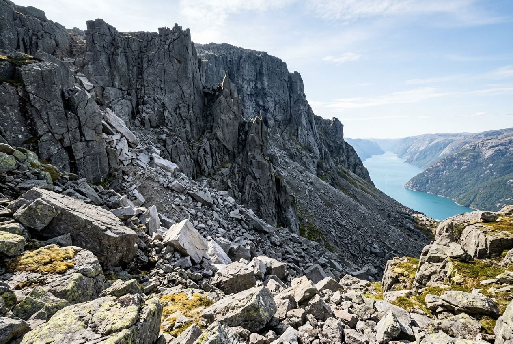
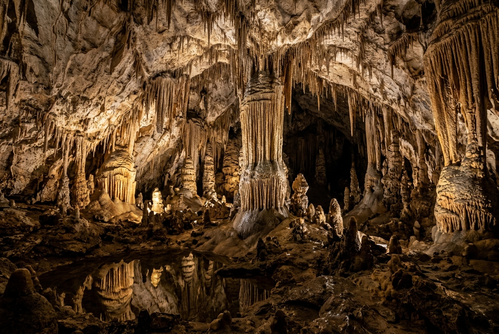
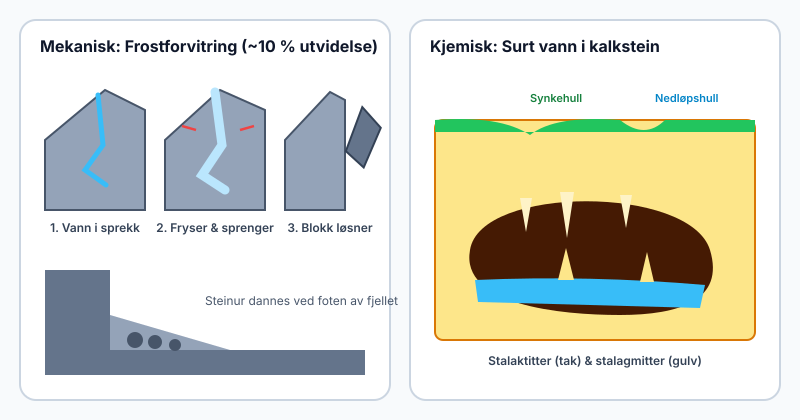
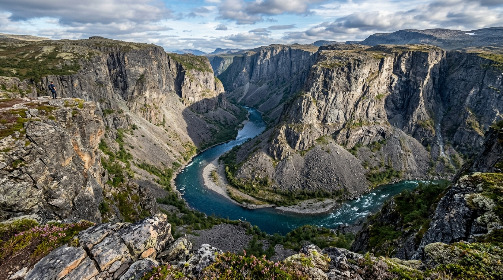

Ytre krefter og landformene i Norge
Hvorfor er det fjorder i Norge? Hvorfor slynger elva seg i så fine svinger nedover dalen, hvorfor er noen av fjellene så spisse, og er det sant at jorda med hus og veier kan rase ut selv der terrenget er nesten helt flatt?

Svært mange turister lokkes til Norge av den spektakulære naturen vår: milelange, vakre fjorder, trange, frodige daler som skjærer seg ned i berggrunnen, og bratte fjell med skarpe tinder som reiser seg mot himmelen. I dette kapittelet får du kunnskaper som går dypere enn de fargerike brosjyrene – slik at du kan forklare hvordan landformene våre er blitt til, hvilke krefter som har slitt og knadd landet, og hvordan de fremdeles er aktive i landets ustoppelige «bli-ny»-prosess.
Kompetansemål
- •Gjøre rede for hvordan indre og ytre krefter har dannet ulike landskap, og gi eksempler på ressursutnyttelse
- •Utforske og gjøre rede for årsakene til en aktuell natur- eller miljøkatastrofe og konsekvenser for mennesker, samfunn og natur
- •Utforske og presentere geografiske forhold og prosesser ved å bruke ulike kilder, inkludert kart
Tenk over
- Hva er forskjellen på indre og ytre krefter?
- Hvorfor blir ikke jorda slipt helt flat og dekket av hav?
- Hvordan skiller forvitring seg fra erosjon?
Hva er en landform?
Kort fortalt
Med begrepet mener vi et karakteristisk landskapstrekk på jordoverflata som er dannet ved erosjons- og sedimentasjonsprosesser.
Vi bruker ordet landform om alle former på landoverflata – små og store, former i fast fjell og former i . Hvis vi sitter høyt med godt utsyn og betrakter et landskap, for eksempel et fjellområde, vil det som oftest bestå av en mosaikk av landformer.
Landformene blir til etter ulike prosesser som deler seg inn i to hovedgrupper: de som har sitt opphav i jordas indre og løfter og bygger jordskorpa (platekollisjon, fjellkjededannelse, vulkanisme, landheving og jordskjelv), og de som virker på jordoverflata ved å tære ned landet. I Norge har vi spesielt mange landformer dannet av rennende vann og isbreer – slik vi blant annet ser ved Besseggen, der Gjende får sin smaragdgrønne farge fra leirpartikler ført ut av isbreene i Jotunheimen.
Havet – fjellenes kirkegård
For 400 millioner år siden satte jordas indre krefter i gang en enorm platekollisjon. Platekanter ble knust og skjøvet sammen til en nesten 6000 kilometer lang fjellkjede, den kaledonske fjellkjedefoldingen. På denne tiden kunne fjellene på det som i dag er Vestlandet, muligens rage hele 10 000 meter over havet. Men noen titall millioner år seinere var disse fjellene slitt ned av ytre krefter. Hadde det ikke vært for at de indre kreftene stadig presser opp nye fjellkjeder og spruter lava ut gjennom jordskorpa, ville de ytre kreftene for lengst ha slipt jorda ned til en helt glatt overflate fullstendig dekket av hav.
Det faste fjellet smuldrer opp ved og blir til (alt fra store og små steiner til grus, sand og leire). Ved fraktes mesteparten av løsmassene til slutt ut i havet, der de og blir liggende. Derfor kan vi kalle havet for fjellenes kirkegård. Etter noen millioner år på havets bunn blir løsmassene presset sammen til avsetningsbergarter, også kalt .
Forvitring
er betegnelsen på at fast fjell eller stein smuldrer opp og blir værende på samme sted som før. Denne forvitringen kan skje på to ulike måter: mekanisk og kjemisk.

Kilde: Egenprodusert AI-illustrasjon (CC0 1.0)
Frostforvitring
er vanlig i områder der temperaturen svinger rundt frysepunktet og det er nok nedbør. Rennende vann finner veien ned i sprekker i berget. Når vannet fryser til is, øker volumet med nesten 10 prosent. Det gir et så stort trykk at sprekken utvider seg, og etter gjentatt frysing og tining løsner deler av berget og kan forvitre videre til grus og sand.

Kilde: Egenprodusert AI-illustrasjon (CC0 1.0)
Trykkavlastning
En dypbergart som granitt størkner flere kilometer under jordoverflata under stort trykk. Når overliggende bergarter slites bort i løpet av millioner av år, blir trykket betydelig mindre – dette kalles . Da utvider det øverste laget seg og sprekker opp i flak parallelle med overflata, lik lagene i en løk. Pene, passe tykke flak kan brukes til bygningsformål.
Kjemisk forvitring og kalksteinshuler
Ved er rennende vann sentralt – som regel svakt surt vann som trenger inn i overflaten av bergarten og endrer den kjemiske sammensetningen. I tidligere geologiske perioder med varmere og fuktigere klima var dette svært aktivt og bidro til å utforme det norske viddelandskapet.
Der det er mye , løses karbondioksid i regnvann opp til svakt surt vann som løser opp kalkmineralene (slik salt løses i vann). Bekker forsvinner ned i nedløpshull og lager synkehull, underjordiske elver og store kalksteinshuler med fra taket og stalagmitter fra gulvet.

Kilde: Egenprodusert AI-illustrasjon (CC0 1.0)

Erosjon, Sautso og skred

Når steinmateriale forvitrer, blir det værende på samme sted. skjer ved at en ytre kraft – for eksempel en elv, en isbre, vind eller bølger – sliter fjell og stein i stykker, transporterer løsmassene fra ett sted og avsetter dem et annet sted. Berggrunn som er forvitret på forhånd, blir lettere erodert. Et imponerende resultat av elveerosjon er Sautso i Altaelva i Finnmark.
Skal forvitret materiale beveges, trengs det vanligvis en eroderende kraft som elv eller isbre. Men der terrenget er tilstrekkelig bratt, kan tyngdekraften være nok til å sette løsmassene i bevegelse i form av .
Repetisjonsoppgaver
- Hva er mekanisk forvitring? Nevn de ulike formene.
- Forklar hvordan frostforvitring foregår.
- Hvordan foregår forvitring ved trykkavlastning?
- Hva er forskjellen på mekanisk og kjemisk forvitring? Bruk dannelsen av kalksteinshuler som eksempel.
- Forklar forskjellen på forvitring og erosjon.
Ordliste
Lisens: Alle fotografiske illustrasjoner og geologiske figurer i Images/ er egenproduserte for dette undervisningsopplegget under åpen lisens (CC0 1.0 / CC BY 4.0).